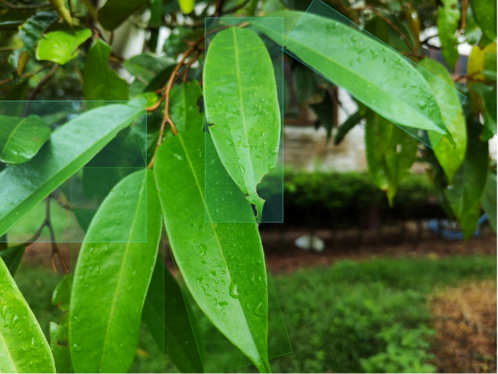
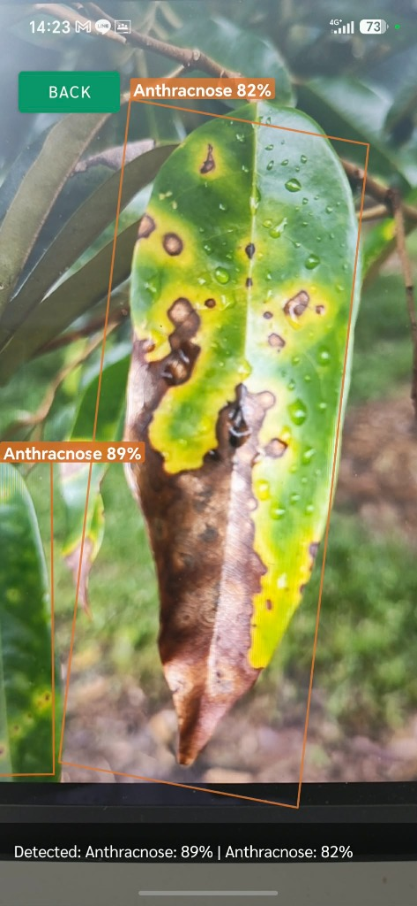

ภาพรวมกระบวนการพัฒนาโมเดล (4 ขั้นตอน)
ทุกขั้นตอนถูกออกแบบให้รองรับสภาพแสง ฉากหลังซับซ้อน และข้อจำกัดของมือถือที่ใช้งานจริงในสวน
เก็บข้อมูลและติดป้าย OBB
รวบรวมภาพใบทุเรียนจริงและมุมจำลอง 4,668 ตัวอย่าง ครอบคลุม 7 ประเภท
ถ่วงสมดุลด้วย E-IRFS + Optuna
ช่วยเพิ่มความแม่นยำในโรคที่พบตัวอย่างน้อย และปรับจูนพารามิเตอร์อัตโนมัติ
วัดผลด้วย YOLO26-OBB
ประเมินความแม่นยำการตรวจจับบนชุดทดสอบ ได้ mAP@0.5 = 0.664 และ mAP@0.5:0.95 = 0.507
แปลงเป็น TensorFlow Lite
Quantize โมเดลให้เบาและเร็วพอสำหรับรันออฟไลน์บนแอป Android (Kotlin)
ทำไมต้องใช้ YOLO26-OBB แทนกรอบสี่เหลี่ยมแนวนอนทั่วไป?
ใบทุเรียนบนต้นจริงไม่ได้วางเรียงตัวในแนวตั้งหรือแนวนอนเสมอไป แต่มักห้อยเอียงเป็นมุมต่างๆ และซ้อนทับกันเป็นพุ่ม หากใช้กรอบสี่เหลี่ยมแนวตรงแบบเดิม (Horizontal Bounding Box) กรอบจะกว้างเกินจำเป็นจนติดพื้นหลัง กิ่งไม้ หรือใบข้างเคียงเข้ามาปะปน ทำให้โมเดลสับสนได้ง่าย
กรอบแบบ OBB (Oriented Bounding Box) จึงเพิ่มมุมเอียงเข้ามาในกรอบตรวจจับ ทำให้กรอบหมุนแนบไปตามทรงใบทุเรียนแต่ละใบ ลดสัญญาณรบกวนจากฉากหลัง และแยกใบที่ซ้อนทับกันในพุ่มได้อย่างชัดเจน
กินพื้นที่ฉากหลังและใบข้างเคียงมาก
แนบสนิทตามมุมเอียง ลดฉากหลังรบกวน

แก้ปัญหาโรคที่พบน้อยด้วย E-IRFS และจูนโมเดลด้วย Optuna
ในชุดข้อมูลจริงจำนวน 4,668 ตัวอย่าง จำนวนใบของแต่ละโรคในธรรมชาติไม่ได้เท่ากัน (Class Imbalance) บางอาการพบมากในสวน ขณะที่บางโรคพบน้อยกว่า หากเทรนตรงๆ โมเดลมักเอียงไปทายกลุ่มที่พบบ่อยได้ดีแต่พลาดในโรคที่พบน้อย
งานวิจัยนี้จึงนำเทคนิค E-IRFS (Exponentially Weighted Instance-Aware Repeat Factor Sampling) มาช่วยจัดสัดส่วนการสุ่มภาพระหว่างฝึกสอน โดยคำนวณน้ำหนักซ้ำตามจำนวนชิ้นใบ (Instance) ในแต่ละคลาส ควบคู่กับการใช้เฟรมเวิร์ก Optuna เพื่อค้นหาค่า Hyperparameters ที่เหมาะสมที่สุดสำหรับชุดข้อมูลใบทุเรียน
ภาพจากสวนจริงและมุมมองจำลอง ครอบคลุมแสง เงา และการซ้อนทับของใบ
Phytophthora, Anthracnose, Rhizoctonia, Phomopsis, Algal Spot, Healthy และ Others
สุ่มถ่วงน้ำหนักแบบเอกซ์โพเนนเชียล ลดความลำเอียงต่อโรคที่พบน้อย
ปรับจูนค่าการเรียนรู้และการขยายข้อมูลอย่างเป็นระบบก่อนแปลงสู่ TFLite
ประสิทธิภาพของโมเดล YOLO26-OBB และการแปลงสู่ TensorFlow Lite
จากการประเมินโมเดลบนชุดข้อมูลใบทุเรียนในสภาพแวดล้อมธรรมชาติที่ซับซ้อน โมเดล YOLO26-OBB ให้ค่าความแม่นยำเฉลี่ยการตรวจจับ และถูกแปลงด้วย TensorFlow Lite (Quantized) เพื่อรันบนแอปพลิเคชัน Android (Kotlin) แบบออฟไลน์ 100% ได้อย่างลื่นไหล
ความแม่นยำเฉลี่ยในการตรวจจับตำแหน่งกรอบเอียงและแยกประเภทโรคที่เกณฑ์ IoU 0.50
ค่าเฉลี่ยความแม่นยำข้ามช่วงเกณฑ์การซ้อนทับ IoU ตั้งแต่ 0.50 ถึง 0.95
- • YOEDO: A Real-Time Mobile Application for Durian Leaf Disease Detection Using YOLO-OBB (TJ-SIF 2026)
- • Durian Leaf Disease Detection Using CNNs with Oriented Bounding Boxes on Drone-Simulated Imagery (AMM 2026, pp. 303–309)
- • GitHub Repository: marsfinncode/cnn-durian (Android Kotlin & TFLite)
- • Ultralytics YOLO OBB Documentation (docs.ultralytics.com/tasks/obb)

ตัวอย่างผลลัพธ์การตรวจจับแบบเรียลไทม์บนมือถือ Android ด้วยโมเดลที่แปลงเป็น TensorFlow Lite
ลองใช้งานจริงบนสมาร์ตโฟน Android ได้เลย
ดาวน์โหลดแอป YOEDO ฟรี พร้อมเมนูภาษาไทย-อังกฤษ ใช้งานได้ทันทีกลางสวนโดยไม่ต้องต่อเน็ต